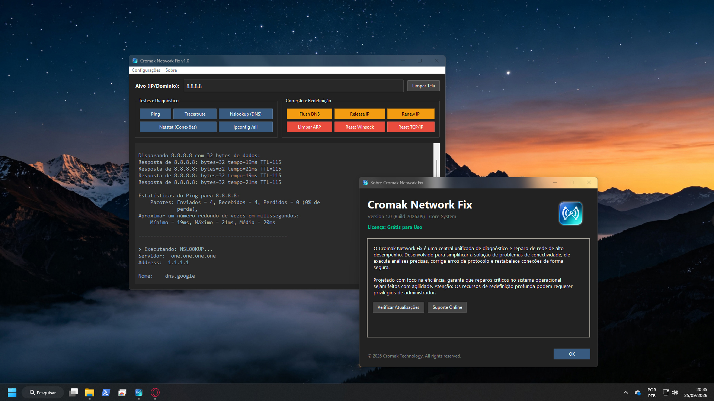
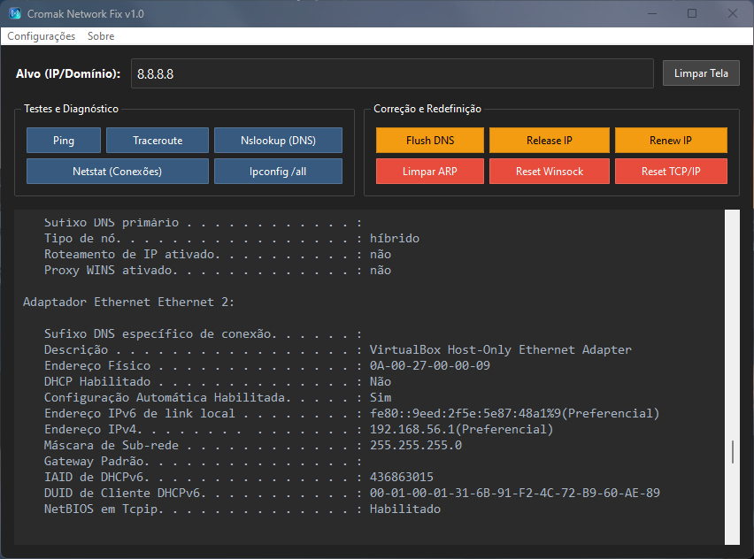
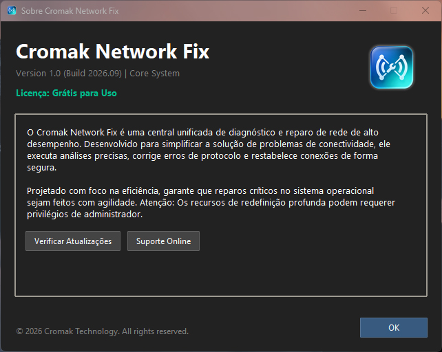

Cromak Network Fix
A Solução Definitiva para Problemas de Conexão no Windows
Versão: 1.0 (Freeware / Ferramenta de Sistema)

Análise Profunda, Solução Imediata
Esqueça tutoriais complexos no Prompt de Comando. Reunimos as instruções de rede mais vitais do Windows em uma única interface moderna, limpa e segura.
🛠️ Diagnóstico em Tempo Real
Execute Ping, Traceroute, Nslookup e Netstat com um único clique. Acompanhe a rota dos seus pacotes e identifique gargalos de conexão instantaneamente através do nosso terminal embutido.
⚡ Reparos de Nível Crítico
Sua internet caiu do nada? Utilize as funções de Flush DNS, Limpeza de Tabela ARP e Renovação de IP para reestabelecer a comunicação com o seu roteador e servidor em poucos segundos.
🛡️ Resets Profundos
Recupere o Windows de corrupções graves causadas por malwares ou atualizações mal-sucedidas. Redefina o catálogo Winsock e recrie toda a pilha TCP/IP do sistema com máxima segurança.
Tudo o Que Você Precisa em Uma Só Tela
A interface do Network Fix foi desenhada para colocar o controle absoluto da sua rede nas suas mãos, sem menus confusos ou distrações visuais.

Terminal Integrado
Visualize o retorno exato do sistema operacional. As saídas dos comandos são formatadas em tempo real em um console de leitura confortável, preservando a transparência técnica de cada ação tomada.
Execução Assíncrona
Diga adeus a aplicativos travando. O motor lógico utiliza múltiplas threads em segundo plano para executar testes longos (como o Traceroute), garantindo que a interface permaneça sempre responsiva.
Múltiplos Temas
Alterne instantaneamente entre dezenas de estilos visuais modernos. Do clássico "Dark Mode" azulado a visuais de alto contraste, o design se adapta perfeitamente ao seu gosto em um clique.
Engenharia Leve, Portátil e Privada
-
Sem Instalação Necessária
O Cromak Network Fix é distribuído em um formato executável único (Stand-Alone). Salve-o em um pen-drive e utilize-o em qualquer PC sem sujar o registro do Windows.
-
Zero Coleta de Dados
Sua rede, sua privacidade. Não rastreamos seus IPs alvos, não armazenamos logs de rotas e não enviamos telemetria. O funcionamento é estritamente local e 100% offline.
-
Uso Inteligente de Privilégios
Testes de diagnóstico comuns operam sem exigir permissões extras. O aplicativo se integra perfeitamente ao UAC do Windows apenas quando redefinições profundas (como TCP/IP) são solicitadas.
⚠️ Uso Consciente
As ferramentas listadas na categoria "Correção e Redefinição" atuam diretamente nas tabelas de roteamento e configurações internas dos adaptadores do Windows. Utilize-as primariamente quando a sua conexão apresentar anomalias ou falhas reais de navegação.

Compatibilidade do Sistema
Desenvolvido nativamente para operar nas versões mais modernas do sistema da Microsoft, assegurando estabilidade em arquiteturas de 64 bits.
Faça o Download
O Cromak Network Fix é uma ferramenta 100% gratuita. Você pode apoiar o desenvolvedor se desejar manter projetos como este vivos.
Uso Geral (Freeware)
- Diagnóstico Profundo Integrado
- Funções de Reset Crítico
- Uso Portátil (.EXE)
- Livre de Telemetria
- Sem Suporte Dedicado
Apoiador do Projeto
- O software é idêntico, mas:
- Você financia novos updates
- Ajuda a manter a Cromak online
- Nosso eterno agradecimento ❤️
🔒 Distribuído com orgulho pela Cromak Technology.